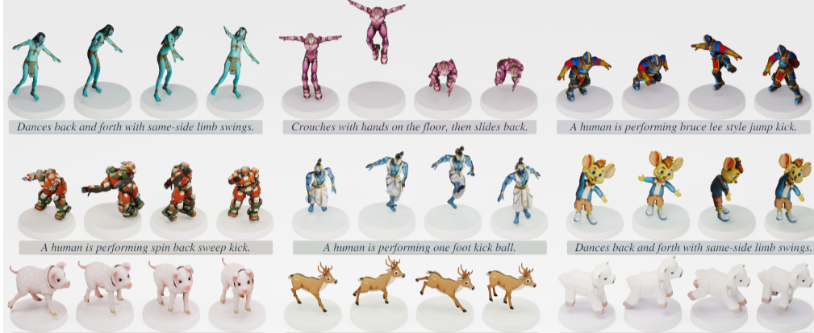

SpectralWeave: Aligning Spectral Coordinates for Native 4D Mesh Generation

Abstract
Native 4D mesh generation directly animates a supplied, unrigged mesh from a semantic action condition while preserving its native topology. We introduce SpectralWeave, to our knowledge, the first spectral generative framework for this challenging task across independently meshed identities. It models surface motion as trajectories of Laplacian coefficients, providing a fixed-size learning space and direct decoding on the supplied vertices without a learned mesh autoencoder.
The key difficulty is that independently computed bases assign different coordinate axes to corresponding deformations, making their coefficients incompatible. Bounded, invertible identity adapters constrained by pairwise functional maps align these coefficients while preserving each reconstruction subspace. This factors mesh-dependent coordinate variation out of the generative task, allowing action- and morphology-conditioned diffusion to model mesh trajectories under a consistent coordinate convention.
The target adapter and native basis decode generated trajectories into topology-preserving mesh sequences, while geometry-aware supervision and deterministic refinement preserve local surface structure. Experiments in separate animal and human domains demonstrate coherent generation on new identities without their motion data, while ablations show that spectral synchronization improves cross-identity generalization.
Method Overview
SpectralWeave models motion in aligned spectral coordinates and decodes it directly on the supplied mesh.
Native spectral basis
Surface motion → coefficients
Identity adapters
A consistent coordinate convention
Conditional diffusion
Aligned coefficient trajectories
Native 4D sequence
Original vertices and connectivity
Results
The teaser shows example mesh sequences in the human and animal domains.
Human & animal motion
Full animation sequences will be added here.
Comparisons & ablations
Additional experimental results will follow.
Resources
The paper, research code, video and citation will be available here upon release.